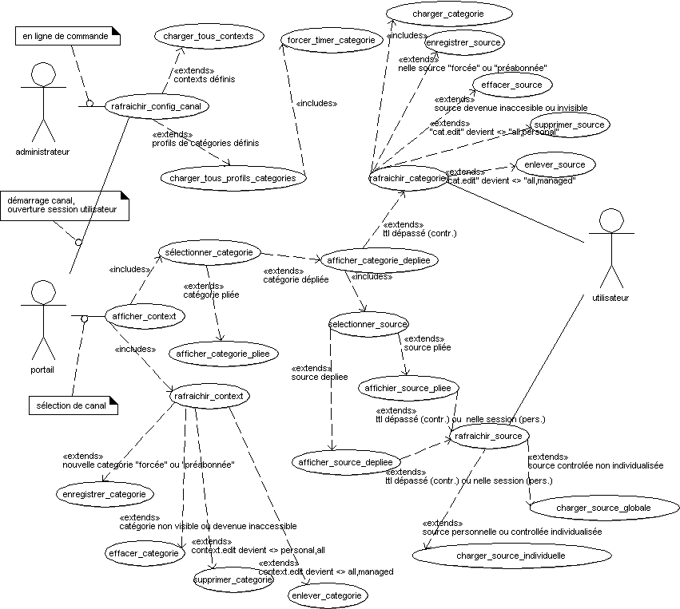

uses-cases-rafraichir
uses-cases-rafraichir

Étude de Cas : rafraichir_config_canal
cf. uses-cases-contexte
Étude de Cas : charger_tous_profils_categories
cf. uses-cases-category
Étude de Cas : charger_tous_contexts
cf. uses-cases-contexte
Étude de Cas : rafraichir_context
cf. uses-cases-contexte
Étude de Cas : rafraichir_categorie
cf. uses-cases-category
Étude de Cas : sélectionner_categorie
cf. uses-cases-category
Étude de Cas : afficher_categorie_pliee
cf. uses-cases-category
Étude de Cas : afficher_categorie_depliee
cf. uses-cases-category
Étude de Cas : afficher_context
cf. uses-cases-contexte
Étude de Cas : selectionner_source
cf. uses-cases-source
Étude de Cas : affichier_source_pliee
cf. uses-cases-source
Étude de Cas : afficher_source_depliee
cf. uses-cases-source
Étude de Cas : rafraichir_source
cf. uses-cases-source
Étude de Cas : forcer_timer_categorie
cf. uses-cases-category
Étude de Cas : charger_categorie
cf. uses-cases-category
Étude de Cas : charger_source_globale
cf. uses-cases-source
Étude de Cas : charger_source_individuelle
cf. uses-cases-source
Étude de Cas : enregistrer_source
cf. uses-cases-sources
Étude de Cas : effacer_source
cf. uses-cases-sources
Étude de Cas : supprimer_source
cf. uses-cases-sources
Étude de Cas : enlever_source
cf. uses-cases-sources
Étude de Cas : enregistrer_categorie
cf. uses-cases-category
Étude de Cas : effacer_categorie
cf. uses-cases-category
Étude de Cas : enlever_categorie
cf. uses-cases-category
Étude de Cas : supprimer_categorie
cf. uses-cases-category
This documentation has been generated by EclipseUML.